import numpy as np
import scipy.linalg
import matplotlib.pyplot as plt
%matplotlib inlineLinear Regression Tutorial
Linear Regression Tutorial
by Marc Deisenroth
The purpose of this notebook is to practice implementing some linear algebra (equations provided) and to explore some properties of linear regression.
We consider a linear regression problem of the form \[ y = \boldsymbol x^T\boldsymbol\theta + \epsilon\,,\quad \epsilon \sim \mathcal N(0, \sigma^2) \] where \(\boldsymbol x\in\mathbb{R}^D\) are inputs and \(y\in\mathbb{R}\) are noisy observations. The parameter vector \(\boldsymbol\theta\in\mathbb{R}^D\) parametrizes the function.
We assume we have a training set \((\boldsymbol x_n, y_n)\), \(n=1,\ldots, N\). We summarize the sets of training inputs in \(\mathcal X = \{\boldsymbol x_1, \ldots, \boldsymbol x_N\}\) and corresponding training targets \(\mathcal Y = \{y_1, \ldots, y_N\}\), respectively.
In this tutorial, we are interested in finding good parameters \(\boldsymbol\theta\).
# Define training set
X = np.array([-3, -1, 0, 1, 3]).reshape(-1,1) # 5x1 vector, N=5, D=1
y = np.array([-1.2, -0.7, 0.14, 0.67, 1.67]).reshape(-1,1) # 5x1 vector
# Plot the training set
plt.figure()
plt.plot(X, y, '+', markersize=10)
plt.xlabel("$x$")
plt.ylabel("$y$");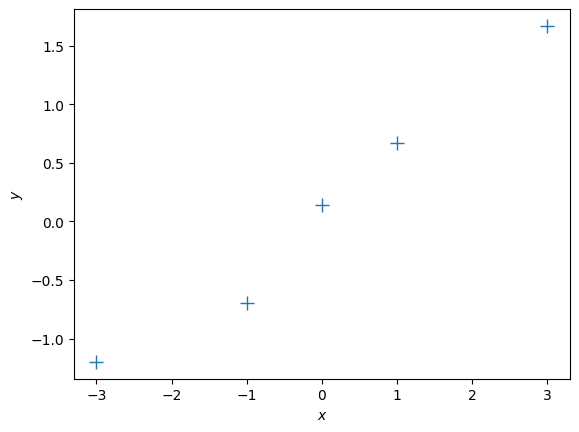
1. Maximum Likelihood
We will start with maximum likelihood estimation of the parameters \(\boldsymbol\theta\). In maximum likelihood estimation, we find the parameters \(\boldsymbol\theta^{\mathrm{ML}}\) that maximize the likelihood \[ p(\mathcal Y | \mathcal X, \boldsymbol\theta) = \prod_{n=1}^N p(y_n | \boldsymbol x_n, \boldsymbol\theta)\,. \] From the lecture we know that the maximum likelihood estimator is given by \[ \boldsymbol\theta^{\text{ML}} = (\boldsymbol X^T\boldsymbol X)^{-1}\boldsymbol X^T\boldsymbol y\in\mathbb{R}^D\,, \] where \[ \boldsymbol X = [\boldsymbol x_1, \ldots, \boldsymbol x_N]^T\in\mathbb{R}^{N\times D}\,,\quad \boldsymbol y = [y_1, \ldots, y_N]^T \in\mathbb{R}^N\,. \]
Let us compute the maximum likelihood estimate for a given training set
## EDIT THIS FUNCTION
def max_lik_estimate(X, y):
# X: N x D matrix of training inputs
# y: N x 1 vector of training targets/observations
# returns: maximum likelihood parameters (D x 1)
N, D = X.shape
theta_ml = np.linalg.solve(X.T @ X, X.T @ y) ## <-- SOLUTION
return theta_ml# get maximum likelihood estimate
theta_ml = max_lik_estimate(X,y)
print(theta_ml)[[0.499]]Now, make a prediction using the maximum likelihood estimate that we just found
## EDIT THIS FUNCTION
def predict_with_estimate(Xtest, theta):
# Xtest: K x D matrix of test inputs
# theta: D x 1 vector of parameters
# returns: prediction of f(Xtest); K x 1 vector
prediction = Xtest @ theta ## <-- SOLUTION
return prediction Now, let’s see whether we got something useful:
# define a test set
Xtest = np.linspace(-5,5,100).reshape(-1,1) # 100 x 1 vector of test inputs
# predict the function values at the test points using the maximum likelihood estimator
ml_prediction = predict_with_estimate(Xtest, theta_ml)
# plot
plt.figure()
plt.plot(X, y, '+', markersize=10)
plt.plot(Xtest, ml_prediction)
plt.xlabel("$x$")
plt.ylabel("$y$");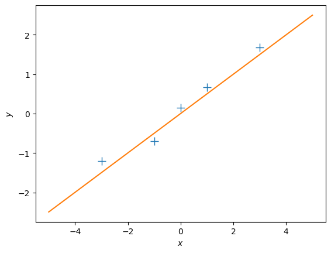
Questions
- Does the solution above look reasonable?
- Play around with different values of \(\theta\). How do the corresponding functions change?
- Modify the training targets \(\mathcal Y\) and re-run your computation. What changes?
Let us now look at a different training set, where we add 2.0 to every \(y\)-value, and compute the maximum likelihood estimate
ynew = y + 2.0
plt.figure()
plt.plot(X, ynew, '+', markersize=10)
plt.xlabel("$x$")
plt.ylabel("$y$");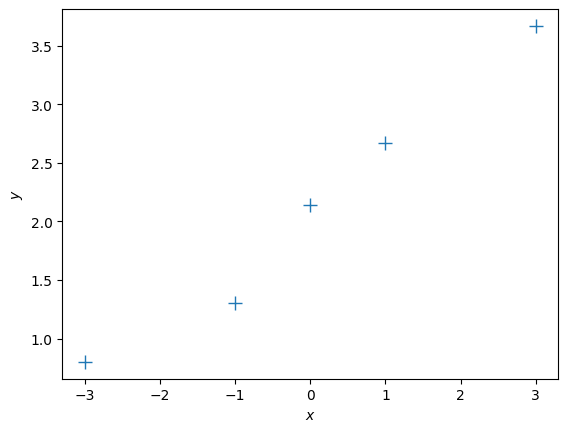
# get maximum likelihood estimate
theta_ml = max_lik_estimate(X, ynew)
print(theta_ml)
# define a test set
Xtest = np.linspace(-5,5,100).reshape(-1,1) # 100 x 1 vector of test inputs
# predict the function values at the test points using the maximum likelihood estimator
ml_prediction = predict_with_estimate(Xtest, theta_ml)
# plot
plt.figure()
plt.plot(X, ynew, '+', markersize=10)
plt.plot(Xtest, ml_prediction)
plt.xlabel("$x$")
plt.ylabel("$y$");[[0.499]]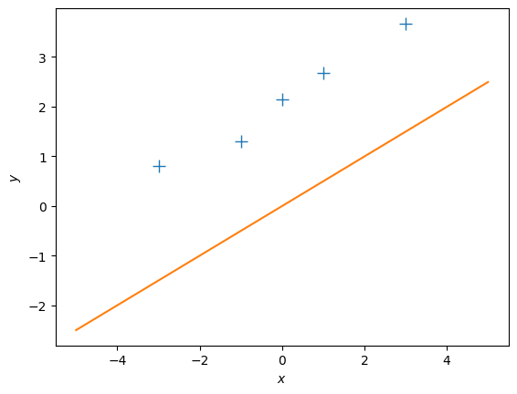
Question:
- This maximum likelihood estimate doesn’t look too good: The orange line is too far away from the observations although we just shifted them by 2. Why is this the case?
- How can we fix this problem?
Let us now define a linear regression model that is slightly more flexible: \[ y = \theta_0 + \boldsymbol x^T \boldsymbol\theta_1 + \epsilon\,,\quad \epsilon\sim\mathcal N(0,\sigma^2) \] Here, we added an offset (bias) parameter \(\theta_0\) to our original model.
Question:
- What is the effect of this bias parameter, i.e., what additional flexibility does it offer?
If we now define the inputs to be the augmented vector \(\boldsymbol x_{\text{aug}} = \begin{bmatrix}1\\\boldsymbol x\end{bmatrix}\), we can write the new linear regression model as \[ y = \boldsymbol x_{\text{aug}}^T\boldsymbol\theta_{\text{aug}} + \epsilon\,,\quad \boldsymbol\theta_{\text{aug}} = \begin{bmatrix} \theta_0\\ \boldsymbol\theta_1 \end{bmatrix}\,. \]
N, D = X.shape
X_aug = np.hstack([np.ones((N,1)), X]) # augmented training inputs of size N x (D+1)
theta_aug = np.zeros((D+1, 1)) # new theta vector of size (D+1) x 1Let us now compute the maximum likelihood estimator for this setting. Hint: If possible, re-use code that you have already written
## EDIT THIS FUNCTION
def max_lik_estimate_aug(X_aug, y):
theta_aug_ml = max_lik_estimate(X_aug, y) ## <-- SOLUTION
return theta_aug_mltheta_aug_ml = max_lik_estimate_aug(X_aug, y)Now, we can make predictions again:
# define a test set (we also need to augment the test inputs with ones)
Xtest_aug = np.hstack([np.ones((Xtest.shape[0],1)), Xtest]) # 100 x (D + 1) vector of test inputs
# predict the function values at the test points using the maximum likelihood estimator
ml_prediction = predict_with_estimate(Xtest_aug, theta_aug_ml)
# plot
plt.figure()
plt.plot(X, y, '+', markersize=10)
plt.plot(Xtest, ml_prediction)
plt.xlabel("$x$")
plt.ylabel("$y$");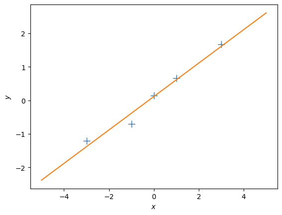
It seems this has solved our problem! #### Question: 1. Play around with the first parameter of \(\boldsymbol\theta_{\text{aug}}\) and see how the fit of the function changes. 2. Play around with the second parameter of \(\boldsymbol\theta_{\text{aug}}\) and see how the fit of the function changes.
Nonlinear Features
So far, we have looked at linear regression with linear features. This allowed us to fit straight lines. However, linear regression also allows us to fit functions that are nonlinear in the inputs \(\boldsymbol x\), as long as the parameters \(\boldsymbol\theta\) appear linearly. This means, we can learn functions of the form \[ f(\boldsymbol x, \boldsymbol\theta) = \sum_{k = 1}^K \theta_k \phi_k(\boldsymbol x)\,, \] where the features \(\phi_k(\boldsymbol x)\) are (possibly nonlinear) transformations of the inputs \(\boldsymbol x\).
Let us have a look at an example where the observations clearly do not lie on a straight line:
y = np.array([10.05, 1.5, -1.234, 0.02, 8.03]).reshape(-1,1)
plt.figure()
plt.plot(X, y, '+')
plt.xlabel("$x$")
plt.ylabel("$y$");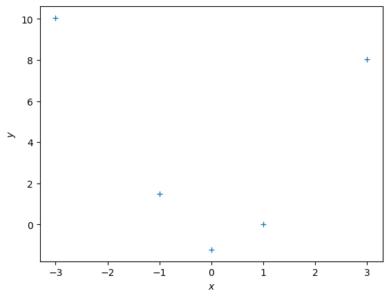
Polynomial Regression
One class of functions that is covered by linear regression is the family of polynomials because we can write a polynomial of degree \(K\) as \[ \sum_{k=0}^K \theta_k x^k = \boldsymbol \phi(x)^T\boldsymbol\theta\,,\quad \boldsymbol\phi(x)= \begin{bmatrix} x^0\\ x^1\\ \vdots\\ x^K \end{bmatrix}\in\mathbb{R}^{K+1}\,. \] Here, \(\boldsymbol\phi(x)\) is a nonlinear feature transformation of the inputs \(x\in\mathbb{R}\).
Similar to the earlier case we can define a matrix that collects all the feature transformations of the training inputs: \[ \boldsymbol\Phi = \begin{bmatrix} \boldsymbol\phi(x_1) & \boldsymbol\phi(x_2) & \cdots & \boldsymbol\phi(x_n) \end{bmatrix}^T \in\mathbb{R}^{N\times K+1} \]
Let us start by computing the feature matrix \(\boldsymbol \Phi\)
## EDIT THIS FUNCTION
def poly_features(X, K):
# X: inputs of size N x 1
# K: degree of the polynomial
# computes the feature matrix Phi (N x (K+1))
X = X.flatten()
N = X.shape[0]
#initialize Phi
Phi = np.zeros((N, K+1))
# Compute the feature matrix in stages
for k in range(K+1):
Phi[:,k] = X**k ## <-- SOLUTION
return PhiWith this feature matrix we get the maximum likelihood estimator as \[ \boldsymbol \theta^\text{ML} = (\boldsymbol\Phi^T\boldsymbol\Phi)^{-1}\boldsymbol\Phi^T\boldsymbol y \] For reasons of numerical stability, we often add a small diagonal “jitter” \(\kappa>0\) to \(\boldsymbol\Phi^T\boldsymbol\Phi\) so that we can invert the matrix without significant problems so that the maximum likelihood estimate becomes \[ \boldsymbol \theta^\text{ML} = (\boldsymbol\Phi^T\boldsymbol\Phi + \kappa\boldsymbol I)^{-1}\boldsymbol\Phi^T\boldsymbol y \]
## EDIT THIS FUNCTION
def nonlinear_features_maximum_likelihood(Phi, y):
# Phi: features matrix for training inputs. Size of N x D
# y: training targets. Size of N by 1
# returns: maximum likelihood estimator theta_ml. Size of D x 1
kappa = 1e-08 # 'jitter' term; good for numerical stability
D = Phi.shape[1]
# maximum likelihood estimate
Pt = Phi.T @ y # Phi^T*y
PP = Phi.T @ Phi + kappa*np.eye(D) # Phi^T*Phi + kappa*I
# maximum likelihood estimate
C = scipy.linalg.cho_factor(PP)
theta_ml = scipy.linalg.cho_solve(C, Pt) # inv(Phi^T*Phi)*Phi^T*y
return theta_mlNow we have all the ingredients together: The computation of the feature matrix and the computation of the maximum likelihood estimator for polynomial regression. Let’s see how this works.
To make predictions at test inputs \(\boldsymbol X_{\text{test}}\in\mathbb{R}\), we need to compute the features (nonlinear transformations) \(\boldsymbol\Phi_{\text{test}}= \boldsymbol\phi(\boldsymbol X_{\text{test}})\) of \(\boldsymbol X_{\text{test}}\) to give us the predicted mean \[ \mathbb{E}[\boldsymbol y_{\text{test}}] = \boldsymbol \Phi_{\text{test}}\boldsymbol\theta^{\text{ML}} \]
K = 5 # Define the degree of the polynomial we wish to fit
Phi = poly_features(X, K) # N x (K+1) feature matrix
theta_ml = nonlinear_features_maximum_likelihood(Phi, y) # maximum likelihood estimator
# test inputs
Xtest = np.linspace(-4,4,100).reshape(-1,1)
# feature matrix for test inputs
Phi_test = poly_features(Xtest, K)
y_pred = Phi_test @ theta_ml # predicted y-values
plt.figure()
plt.plot(X, y, '+')
plt.plot(Xtest, y_pred)
plt.xlabel("$x$")
plt.ylabel("$y$");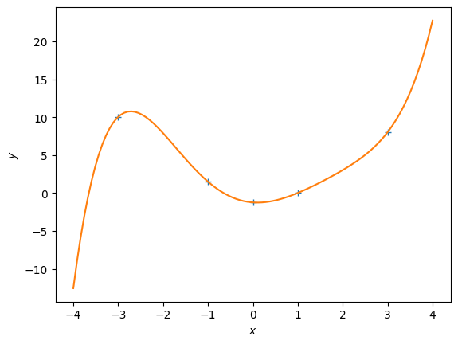
Experiment with different polynomial degrees in the code above. #### Questions: 1. What do you observe? 2. What is a good fit?
Evaluating the Quality of the Model
Let us have a look at a more interesting data set
def f(x):
return np.cos(x) + 0.2*np.random.normal(size=(x.shape))
X = np.linspace(-4,4,20).reshape(-1,1)
y = f(X)
plt.figure()
plt.plot(X, y, '+')
plt.xlabel("$x$")
plt.ylabel("$y$");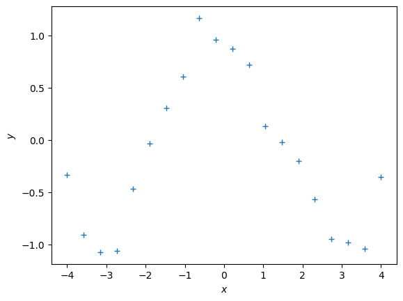
Now, let us use the work from above and fit polynomials to this dataset.
## EDIT THIS CELL
K = 6 # Define the degree of the polynomial we wish to fit
Phi = poly_features(X, K) # N x (K+1) feature matrix
theta_ml = nonlinear_features_maximum_likelihood(Phi, y) # maximum likelihood estimator
# test inputs
Xtest = np.linspace(-5,5,100).reshape(-1,1)
ytest = f(Xtest) # ground-truth y-values
# feature matrix for test inputs
Phi_test = poly_features(Xtest, K)
y_pred = Phi_test @ theta_ml # predicted y-values
# plot
plt.figure()
plt.plot(X, y, '+')
plt.plot(Xtest, y_pred)
plt.plot(Xtest, ytest)
plt.legend(["data", "prediction", "ground truth observations"])
plt.xlabel("$x$")
plt.ylabel("$y$");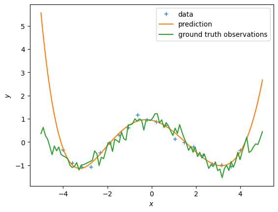
Questions:
- Try out different degrees of polynomials.
- Based on visual inspection, what looks like the best fit?
Let us now look at a more systematic way to assess the quality of the polynomial that we are trying to fit. For this, we compute the root-mean-squared-error (RMSE) between the \(y\)-values predicted by our polynomial and the ground-truth \(y\)-values. The RMSE is then defined as \[ \text{RMSE} = \sqrt{\frac{1}{N}\sum_{n=1}^N(y_n - y_n^\text{pred})^2} \] Write a function that computes the RMSE.
## EDIT THIS FUNCTION
def RMSE(y, ypred):
rmse = np.sqrt(np.mean((y-ypred)**2)) ## SOLUTION
return rmseNow compute the RMSE for different degrees of the polynomial we want to fit.
## EDIT THIS CELL
K_max = 20
rmse_train = np.zeros((K_max+1,))
for k in range(K_max+1):
# feature matrix
Phi = poly_features(X, k)
# maximum likelihood estimate
theta_ml = nonlinear_features_maximum_likelihood(Phi, y)
# predict y-values of training set
ypred_train = Phi @ theta_ml
# RMSE on training set
rmse_train[k] = RMSE(y, ypred_train)
plt.figure()
plt.plot(rmse_train)
plt.xlabel("degree of polynomial")
plt.ylabel("RMSE");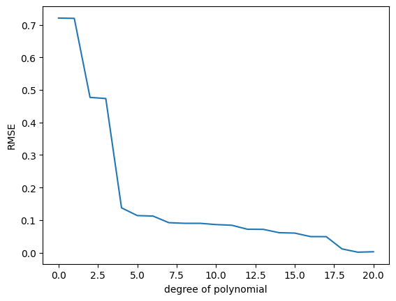
Question:
- What do you observe?
- What is the best polynomial fit according to this plot?
- Write some code that plots the function that uses the best polynomial degree (use the test set for this plot). What do you observe now?
# WRITE THE PLOTTING CODE HERE
plt.figure()
plt.plot(X, y, '+')
# feature matrix
Phi = poly_features(X, 5)
# maximum likelihood estimate
theta_ml = nonlinear_features_maximum_likelihood(Phi, y)
# feature matrix for test inputs
Phi_test = poly_features(Xtest, 5)
ypred_test = Phi_test @ theta_ml
plt.plot(Xtest, ypred_test)
plt.xlabel("$x$")
plt.ylabel("$y$")
plt.legend(["data", "maximum likelihood fit"]);
The RMSE on the training data is somewhat misleading, because we are interested in the generalization performance of the model. Therefore, we are going to compute the RMSE on the test set and use this to choose a good polynomial degree.
## EDIT THIS CELL
K_max = 20
rmse_train = np.zeros((K_max+1,))
rmse_test = np.zeros((K_max+1,))
for k in range(K_max+1):
# feature matrix
Phi = poly_features(X, k)
# maximum likelihood estimate
theta_ml = nonlinear_features_maximum_likelihood(Phi, y)
# predict y-values of training set
ypred_train = Phi @ theta_ml
# RMSE on training set
rmse_train[k] = RMSE(y, ypred_train)
# feature matrix for test inputs
Phi_test = poly_features(Xtest, k)
# prediction
ypred_test = Phi_test @ theta_ml
# RMSE on test set
rmse_test[k] = RMSE(ytest, ypred_test)
plt.figure()
plt.semilogy(rmse_train) # this plots the RMSE on a logarithmic scale
plt.semilogy(rmse_test) # this plots the RMSE on a logarithmic scale
plt.xlabel("degree of polynomial")
plt.ylabel("RMSE")
plt.legend(["training set", "test set"]);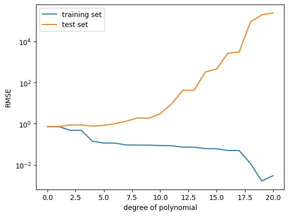
Questions:
- What do you observe now?
- Why does the RMSE for the test set not always go down?
- Which polynomial degree would you choose now?
- Plot the fit for the “best” polynomial degree.
# WRITE THE PLOTTING CODE HERE
plt.figure()
plt.plot(X, y, '+')
k = 5
# feature matrix
Phi = poly_features(X, k)
# maximum likelihood estimate
theta_ml = nonlinear_features_maximum_likelihood(Phi, y)
# feature matrix for test inputs
Phi_test = poly_features(Xtest, k)
ypred_test = Phi_test @ theta_ml
plt.plot(Xtest, ypred_test)
plt.xlabel("$x$")
plt.ylabel("$y$")
plt.legend(["data", "maximum likelihood fit"]);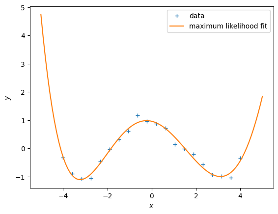
Question
If you did not have a designated test set, what could you do to estimate the generalization error (purely using the training set)?
2. Maximum A Posteriori Estimation
We are still considering the model \[ y = \boldsymbol\phi(\boldsymbol x)^T\boldsymbol\theta + \epsilon\,,\quad \epsilon\sim\mathcal N(0,\sigma^2)\,. \] We assume that the noise variance \(\sigma^2\) is known.
Instead of maximizing the likelihood, we can look at the maximum of the posterior distribution on the parameters \(\boldsymbol\theta\), which is given as \[ p(\boldsymbol\theta|\mathcal X, \mathcal Y) = \frac{\overbrace{p(\mathcal Y|\mathcal X, \boldsymbol\theta)}^{\text{likelihood}}\overbrace{p(\boldsymbol\theta)}^{\text{prior}}}{\underbrace{p(\mathcal Y|\mathcal X)}_{\text{evidence}}} \] The purpose of the parameter prior \(p(\boldsymbol\theta)\) is to discourage the parameters to attain extreme values, a sign that the model overfits. The prior allows us to specify a “reasonable” range of parameter values. Typically, we choose a Gaussian prior \(\mathcal N(\boldsymbol 0, \alpha^2\boldsymbol I)\), centered at \(\boldsymbol 0\) with variance \(\alpha^2\) along each parameter dimension.
The MAP estimate of the parameters is \[ \boldsymbol\theta^{\text{MAP}} = (\boldsymbol\Phi^T\boldsymbol\Phi + \frac{\sigma^2}{\alpha^2}\boldsymbol I)^{-1}\boldsymbol\Phi^T\boldsymbol y \] where \(\sigma^2\) is the variance of the noise.
## EDIT THIS FUNCTION
def map_estimate_poly(Phi, y, sigma, alpha):
# Phi: training inputs, Size of N x D
# y: training targets, Size of D x 1
# sigma: standard deviation of the noise
# alpha: standard deviation of the prior on the parameters
# returns: MAP estimate theta_map, Size of D x 1
D = Phi.shape[1]
# SOLUTION
PP = Phi.T @ Phi + (sigma/alpha)**2 * np.eye(D)
theta_map = scipy.linalg.solve(PP, Phi.T @ y)
return theta_map# define the function we wish to estimate later
def g(x, sigma):
p = np.hstack([x**0, x**1, np.sin(x)])
w = np.array([-1.0, 0.1, 1.0]).reshape(-1,1)
return p @ w + sigma*np.random.normal(size=x.shape) # Generate some data
sigma = 1.0 # noise standard deviation
alpha = 1.0 # standard deviation of the parameter prior
N = 20
np.random.seed(42)
X = (np.random.rand(N)*10.0 - 5.0).reshape(-1,1)
y = g(X, sigma) # training targets
plt.figure()
plt.plot(X, y, '+')
plt.xlabel("$x$")
plt.ylabel("$y$");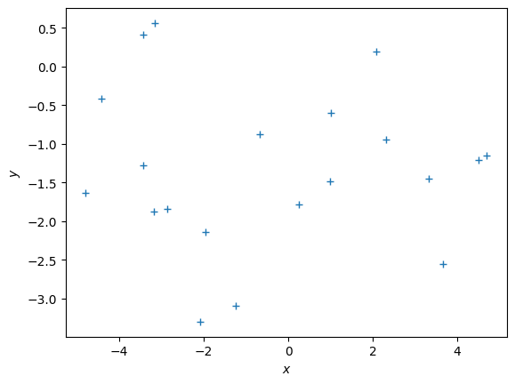
# get the MAP estimate
K = 8 # polynomial degree
# feature matrix
Phi = poly_features(X, K)
theta_map = map_estimate_poly(Phi, y, sigma, alpha)
# maximum likelihood estimate
theta_ml = nonlinear_features_maximum_likelihood(Phi, y)
Xtest = np.linspace(-5,5,100).reshape(-1,1)
ytest = g(Xtest, sigma)
Phi_test = poly_features(Xtest, K)
y_pred_map = Phi_test @ theta_map
y_pred_mle = Phi_test @ theta_ml
plt.figure()
plt.plot(X, y, '+')
plt.plot(Xtest, y_pred_map)
plt.plot(Xtest, g(Xtest, 0))
plt.plot(Xtest, y_pred_mle)
plt.legend(["data", "map prediction", "ground truth function", "maximum likelihood"]);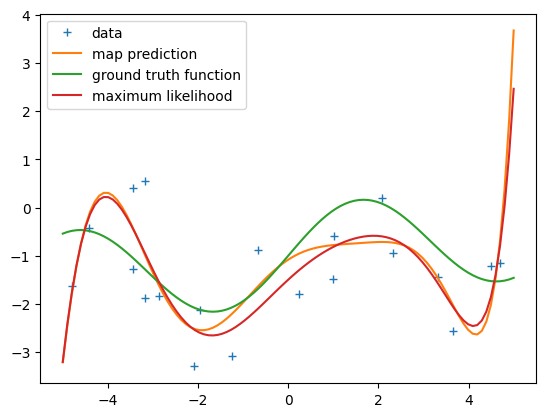
print(np.hstack([theta_ml, theta_map]))[[-1.49712990e+00 -1.08154986e+00]
[ 8.56868912e-01 6.09177023e-01]
[-1.28335730e-01 -3.62071208e-01]
[-7.75319509e-02 -3.70531732e-03]
[ 3.56425467e-02 7.43090617e-02]
[-4.11626749e-03 -1.03278646e-02]
[-2.48817783e-03 -4.89363010e-03]
[ 2.70146690e-04 4.24148554e-04]
[ 5.35996050e-05 1.03384719e-04]]Now, let us compute the RMSE for different polynomial degrees and see whether the MAP estimate addresses the overfitting issue we encountered with the maximum likelihood estimate.
## EDIT THIS CELL
K_max = 12 # this is the maximum degree of polynomial we will consider
assert(K_max < N) # this is the latest point when we'll run into numerical problems
rmse_mle = np.zeros((K_max+1,))
rmse_map = np.zeros((K_max+1,))
for k in range(K_max+1):
# feature matrix
Phi = poly_features(X, k)
# maximum likelihood estimate
theta_ml = nonlinear_features_maximum_likelihood(Phi, y)
# predict the function values at the test input locations (maximum likelihood)
y_pred_test = 0*Xtest ## <--- EDIT THIS LINE
####################### SOLUTION
# feature matrix for test inputs
Phi_test = poly_features(Xtest, k)
# prediction
ypred_test_mle = Phi_test @ theta_ml
#######################
# RMSE on test set (maximum likelihood)
rmse_mle[k] = RMSE(ytest, ypred_test_mle)
# MAP estimate
theta_map = map_estimate_poly(Phi, y, sigma, alpha)
# Feature matrix
Phi_test = poly_features(Xtest, k)
# predict the function values at the test input locations (MAP)
ypred_test_map = Phi_test @ theta_map
# RMSE on test set (MAP)
rmse_map[k] = RMSE(ytest, ypred_test_map)
plt.figure()
plt.semilogy(rmse_mle) # this plots the RMSE on a logarithmic scale
plt.semilogy(rmse_map) # this plots the RMSE on a logarithmic scale
plt.xlabel("degree of polynomial")
plt.ylabel("RMSE")
plt.legend(["Maximum likelihood", "MAP"])C:\Users\HP\AppData\Local\Temp\ipykernel_30576\3627804172.py:13: LinAlgWarning: Ill-conditioned matrix (rcond=1.82839e-17): result may not be accurate.
theta_map = scipy.linalg.solve(PP, Phi.T @ y)<matplotlib.legend.Legend at 0x14fbafd0f10>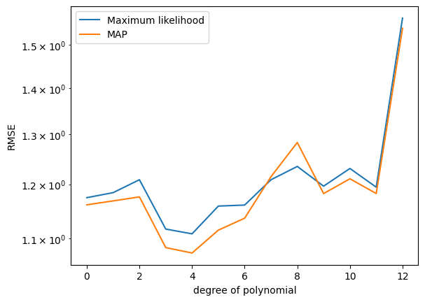
Questions:
- What do you observe?
- What is the influence of the prior variance on the parameters (\(\alpha^2\))? Change the parameter and describe what happens.
3. Bayesian Linear Regression
# Test inputs
Ntest = 200
Xtest = np.linspace(-5, 5, Ntest).reshape(-1,1) # test inputs
prior_var = 2.0 # variance of the parameter prior (alpha^2). We assume this is known.
noise_var = 1.0 # noise variance (sigma^2). We assume this is known.
pol_deg = 3 # degree of the polynomial we consider at the momentAssume a parameter prior \(p(\boldsymbol\theta) = \mathcal N (\boldsymbol 0, \alpha^2\boldsymbol I)\). For every test input \(\boldsymbol x_*\) we obtain the prior mean \[ E[f(\boldsymbol x_*)] = 0 \] and the prior (marginal) variance (ignoring the noise contribution) \[ V[f(\boldsymbol x_*)] = \alpha^2\boldsymbol\phi(\boldsymbol x_*) \boldsymbol\phi(\boldsymbol x_*)^\top \] where \(\boldsymbol\phi(\cdot)\) is the feature map.
## EDIT THIS CELL
# compute the feature matrix for the test inputs
Phi_test = poly_features(Xtest, pol_deg) # N x (pol_deg+1) feature matrix SOLUTION
# compute the (marginal) prior at the test input locations
# prior mean
prior_mean = np.zeros((Ntest,1)) # prior mean <-- SOLUTION
# prior variance
full_covariance = Phi_test @ Phi_test.T * prior_var # N x N covariance matrix of all function values
prior_marginal_var = np.diag(full_covariance)
# Let us visualize the prior over functions
plt.figure()
plt.plot(Xtest, prior_mean, color="k")
conf_bound1 = np.sqrt(prior_marginal_var).flatten()
conf_bound2 = 2.0*np.sqrt(prior_marginal_var).flatten()
conf_bound3 = 2.0*np.sqrt(prior_marginal_var + noise_var).flatten()
plt.fill_between(Xtest.flatten(), prior_mean.flatten() + conf_bound1,
prior_mean.flatten() - conf_bound1, alpha = 0.1, color="k")
plt.fill_between(Xtest.flatten(), prior_mean.flatten() + conf_bound2,
prior_mean.flatten() - conf_bound2, alpha = 0.1, color="k")
plt.fill_between(Xtest.flatten(), prior_mean.flatten() + conf_bound3,
prior_mean.flatten() - conf_bound3, alpha = 0.1, color="k")
plt.xlabel('$x$')
plt.ylabel('$y$')
plt.title("Prior over functions");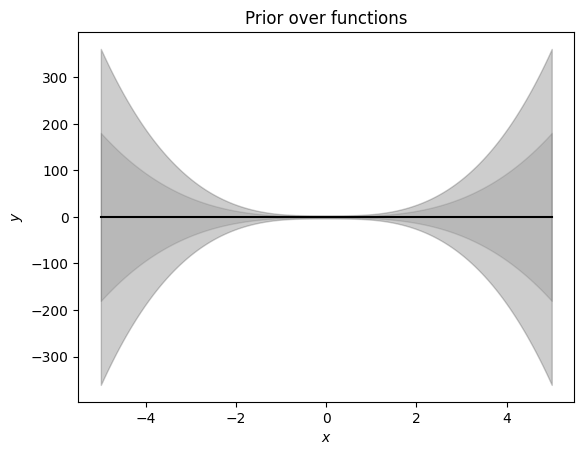
Now, we will use this prior distribution and sample functions from it.
## EDIT THIS CELL
# samples from the prior
num_samples = 10
# We first need to generate random weights theta_i, which we sample from the parameter prior
random_weights = np.random.normal(size=(pol_deg+1,num_samples), scale=np.sqrt(prior_var))
# Now, we compute the induced random functions, evaluated at the test input locations
# Every function sample is given as f_i = Phi * theta_i,
# where theta_i is a sample from the parameter prior
sample_function = Phi_test @ random_weights # <-- SOLUTION
plt.figure()
plt.plot(Xtest, sample_function, color="r")
plt.title("Plausible functions under the prior")
print("Every sampled function is a polynomial of degree "+str(pol_deg));Every sampled function is a polynomial of degree 3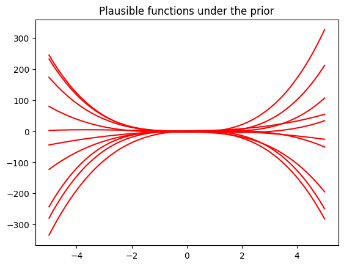
Now we are given some training inputs \(\boldsymbol x_1, \dotsc, \boldsymbol x_N\), which we collect in a matrix \(\boldsymbol X = [\boldsymbol x_1, \dotsc, \boldsymbol x_N]^\top\in\mathbb{R}^{N\times D}\)
N = 10
X = np.random.uniform(high=5, low=-5, size=(N,1)) # training inputs, size Nx1
y = g(X, np.sqrt(noise_var)) # training targets, size Nx1Now, let us compute the posterior
## EDIT THIS FUNCTION
def polyfit(X, y, K, prior_var, noise_var):
# X: training inputs, size N x D
# y: training targets, size N x 1
# K: degree of polynomial we consider
# prior_var: prior variance of the parameter distribution
# sigma: noise variance
jitter = 1e-08 # increases numerical stability
Phi = poly_features(X, K) # N x (K+1) feature matrix
# Compute maximum likelihood estimate
Pt = Phi.T @ y # Phi*y, size (K+1,1)
PP = Phi.T @ Phi + jitter*np.eye(K+1) # size (K+1, K+1)
C = scipy.linalg.cho_factor(PP)
# maximum likelihood estimate
theta_ml = scipy.linalg.cho_solve(C, Pt) # inv(Phi^T*Phi)*Phi^T*y, size (K+1,1)
# theta_ml = scipy.linalg.solve(PP, Pt) # inv(Phi^T*Phi)*Phi^T*y, size (K+1,1)
# MAP estimate
theta_map = scipy.linalg.solve(PP + noise_var/prior_var*np.eye(K+1), Pt)
# parameter posterior
iSN = (np.eye(K+1)/prior_var + PP/noise_var) # posterior precision
SN = scipy.linalg.pinv(noise_var*np.eye(K+1)/prior_var + PP)*noise_var # posterior covariance
mN = scipy.linalg.solve(iSN, Pt/noise_var) # posterior mean
return (theta_ml, theta_map, mN, SN)theta_ml, theta_map, theta_mean, theta_var = polyfit(X, y, pol_deg, alpha, sigma)print(theta_mean, theta_var)[[-0.59357667]
[ 0.41955968]
[ 0.01927393]
[-0.02591532]] [[ 0.31686871 -0.05423782 -0.03675352 0.0068937 ]
[-0.05423782 0.05899309 0.00762815 -0.00430896]
[-0.03675352 0.00762815 0.00680258 -0.00137103]
[ 0.0068937 -0.00430896 -0.00137103 0.00049154]]Now, let’s make predictions (ignoring the measurement noise). We obtain three predictors: \[\begin{align} &\text{Maximum likelihood: }E[f(\boldsymbol X_{\text{test}})] = \boldsymbol \phi(X_{\text{test}})\boldsymbol \theta_{ml}\\ &\text{Maximum a posteriori: } E[f(\boldsymbol X_{\text{test}})] = \boldsymbol \phi(X_{\text{test}})\boldsymbol \theta_{map}\\ &\text{Bayesian: } p(f(\boldsymbol X_{\text{test}})) = \mathcal N(f(\boldsymbol X_{\text{test}}) \,|\, \boldsymbol \phi(X_{\text{test}}) \boldsymbol\theta_{\text{mean}},\, \boldsymbol\phi(X_{\text{test}}) \boldsymbol\theta_{\text{var}} \boldsymbol\phi(X_{\text{test}})^\top) \end{align}\] We already computed all quantities. Write some code that implements all three predictors.
## EDIT THIS CELL
# predictions (ignoring the measurement/observations noise)
Phi_test = poly_features(Xtest, pol_deg) # N x (K+1)
# maximum likelihood predictions (just the mean)
m_mle_test = Phi_test @ theta_ml
# MAP predictions (just the mean)
m_map_test = Phi_test @ theta_map
# predictive distribution (Bayesian linear regression)
# mean prediction
mean_blr = Phi_test @ theta_mean
# variance prediction
cov_blr = Phi_test @ theta_var @ Phi_test.Tprint(Xtest.shape, Phi_test.shape)(200, 1) (200, 4)print(mean_blr.shape, cov_blr.shape)(200, 1) (200, 200)# plot the posterior
plt.figure()
plt.plot(X, y, "+")
plt.plot(Xtest, m_mle_test)
plt.plot(Xtest, m_map_test)
var_blr = np.diag(cov_blr)
conf_bound1 = np.sqrt(var_blr).flatten()
conf_bound2 = 2.0*np.sqrt(var_blr).flatten()
conf_bound3 = 2.0*np.sqrt(var_blr + sigma).flatten()
plt.fill_between(Xtest.flatten(), mean_blr.flatten() + conf_bound1,
mean_blr.flatten() - conf_bound1, alpha = 0.1, color="k")
plt.fill_between(Xtest.flatten(), mean_blr.flatten() + conf_bound2,
mean_blr.flatten() - conf_bound2, alpha = 0.1, color="k")
plt.fill_between(Xtest.flatten(), mean_blr.flatten() + conf_bound3,
mean_blr.flatten() - conf_bound3, alpha = 0.1, color="k")
plt.legend(["Training data", "MLE", "MAP", "BLR"])
plt.xlabel('$x$');
plt.ylabel('$y$');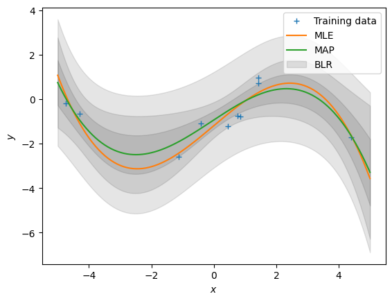